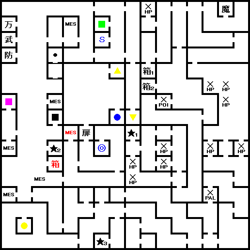
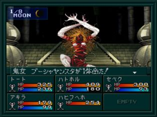

- 시설
- 공략
- 5F
- 6F
- BOSS:귀녀 프샤얀스타
시설
- 6F : 회복, 사교, 무기, 방어, 도구, 카지노
공략
특별한 이벤트는 없다. 계속 올라가서 6F으로 가자.
5F
밸브를 열어두자. 이 장소에 갈려면 3F의 북서쪽 계단으로 올라와야 된다.
6F

- S : 세이브
- ★1 : 프샤얀스타
- ★2 : 앨리스(PS판)
- ★3 : 장로
- 남서쪽 ● : 카지노
맵 중앙의
BOSS:귀녀 프샤얀스타를 넘어뜨리고 남쪽의 장로를 만나면 보수로 총과 탄을 준다.
이후 타페트의 거리의 기능이 회복한다. 카지노도 같이 열린다.
모든 일을 끝내고 중앙의 잠겨 있던 문을 통해 제2노모스에 간다.
BOSS:귀녀 프샤얀스타

| 이름 |
Lv40 鬼女 プーシャヤンスタ |
| HP |
5050 |
| 마법/특기 |
烈風波, デカジャ, マカジャマ, ラクンダ, ドロップボイス, メガトンプレス, タルンダ |
이전까지의 보스와 다르게 HP가 높다. 장기전을 생각하고 준비하고 가는 것이 좋다.
보스가 사용하는 열풍파(烈風波)는 데미지 + PALYZE 효과가 있다. 파라라디(パララディ)를 사용하거나 디스파라이즈(ディスパライズ)를 사용해서 풀어주자.